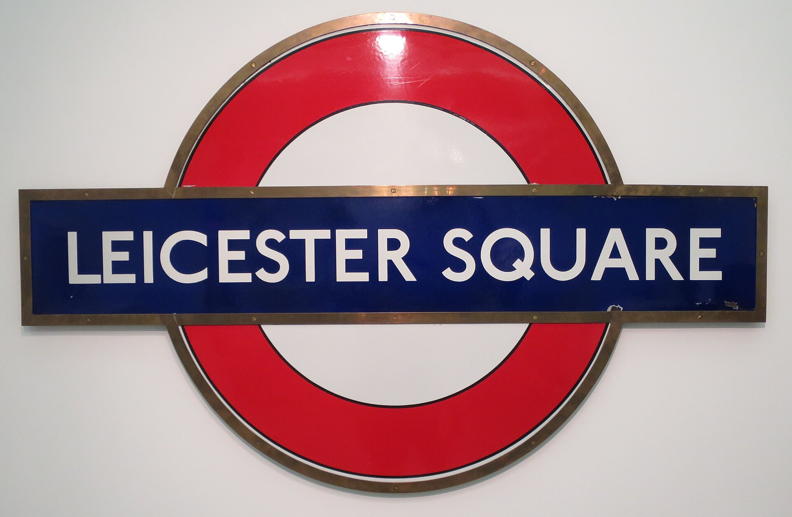

Lesson 4: The lines and what they serve
Activities in this lesson: CECompréhension écrite · POProduction orale · PEProduction écrite
Lesson outline
Lesson of 55 minutes, timed for 52 minutes.
- 8 min · Warm-up
- CE14 min · Documents
- 12 min · Activities
- PO8 min · Role play : everyone speaks at least once
- 10 min · Gap-fill et trace écrite
- Written record. Two or three key sentences from the lesson.
- Participation. everyone speaks at least once: one sentence each.
- Homework for next lesson. The homework already given on the page.
Stopping point. End of this lesson. The homework is already given lower down on the page.
Emergency exit · 8 min. If time runs short at this stopping point, we condense: we dictate a short written record (two or three key sentences from the lesson) ; a round of the class, one sentence each, so that everyone has spoken at least once; the homework, already given on the page, is written on the board.
Objectives
- Read a network
- Give directions
Warm-up
Name a London place you would like to visit.
CEDocuments
| Line | Colour | Some places it serves |
|---|---|---|
| Central | Red | Oxford Circus, Bank, Stratford |
| Piccadilly | Dark blue | Heathrow Airport, Piccadilly Circus, King's Cross St Pancras |
| Northern | Black | Camden Town, Bank, Leicester Square |
| Victoria | Light blue | King's Cross St Pancras, Oxford Circus, Brixton |
| Jubilee | Grey | Westminster, London Bridge, Canary Wharf |
| District | Green | Wimbledon, Richmond, Tower Hill |
| Bakerloo | Brown | Baker Street, Oxford Circus, Waterloo |
| Circle | Yellow | Paddington, Baker Street, Westminster |
| Hammersmith & City | Pink | Hammersmith, Paddington, Barking |
| Metropolitan | Magenta | Baker Street, Wembley Park, Amersham |
| Waterloo & City | Turquoise | Waterloo, Bank |
Source: Transport for London, Tube map. The Elizabeth line (purple) opened in 2022 but is not a Tube line.

Activities
- Which line goes to Heathrow Airport?
- You are at Paddington. How can you get to Westminster?
- Plan a day: three places, three lines.
- Find a station on the Bakerloo line where you can change to the Victoria line.
Sentence starters
- Take the... line to...
- Change at...
- Get off at...
- It takes about... minutes.
PORole play
Gap-fill worksheet
- The ______ line serves Heathrow Airport.
- The Central line is ______ on the map.
- The Waterloo & City line links Waterloo and ______.
- Bakerloo and Victoria meet at Oxford ______.
Answer key
- Piccadilly
- red
- Bank
- Circus
Homework
PEWrite directions from Baker Street to Canary Wharf.
Assessment grid
| Criteria | Level 1 | Level 2 | Level 3 | Level 4 |
|---|---|---|---|---|
| Content | Few ideas | Some ideas | Clear ideas | Rich, precise ideas |
| Language | Many errors | Some errors | Mostly correct | Accurate and varied |
| Interaction / organisation | Little | Basic | Good | Fluent and natural |
Links reminder
Spirale de Gorse
Méthode conçue par Madame Carole Paoli Pompougnac. Le nom rend hommage à sa grand-mère par alliance, Madame Armandine Gorse, avec un S. On gravit un texte, un audio ou une image comme une pente : chaque tour est une prise plus haute. On part de ce qui saute aux yeux, puis l'attention se resserre, jusqu'à la pointe, le sommet où l'essentiel se laisse voir. Quatre tours, puis la pointe. À appliquer, dans chaque lesson, au document principal (texte, image ou audio). Les réponses détaillées restent en Version prof.

Je remarque (I notice)
Ce qui saute aux yeux, la première impression.
I notice… / This is about…
Je repère (I spot)
Un détail, un passage, un élément plus net.
I spot… / The key word is…
Je comprends (I understand)
Ce que ces éléments permettent de comprendre.
This shows that… / They have in common…
J'anticipe (I anticipate)
La visée du texte, ce qu'il faut en faire.
The text wants me to… / I anticipate…
Je trouve le sens (I find the meaning)
La pointe : l'essentiel que l'on peut défendre, et sa limite.
The point is… / But I must not…